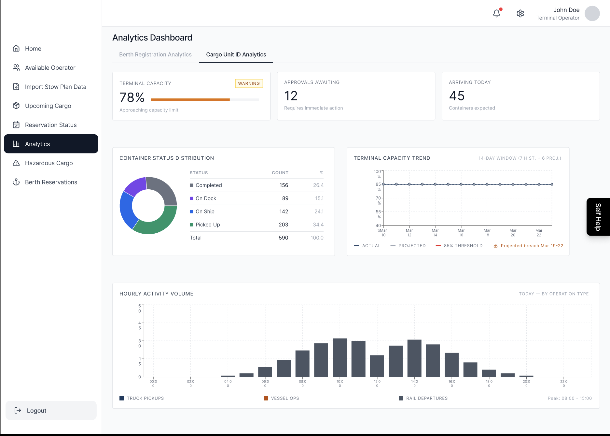
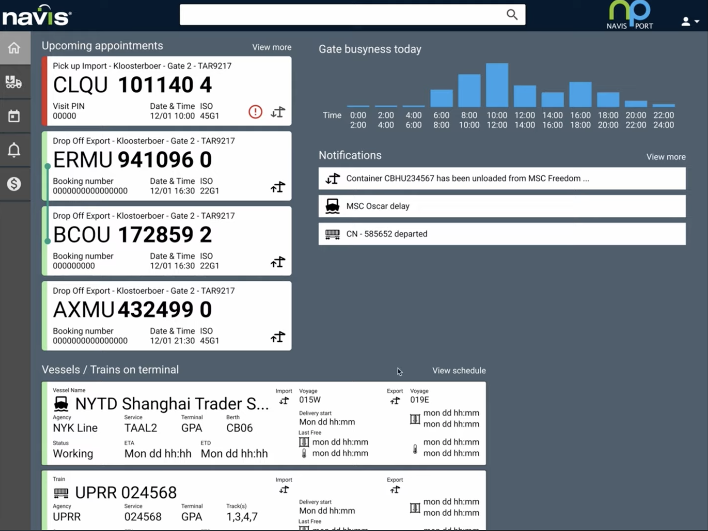
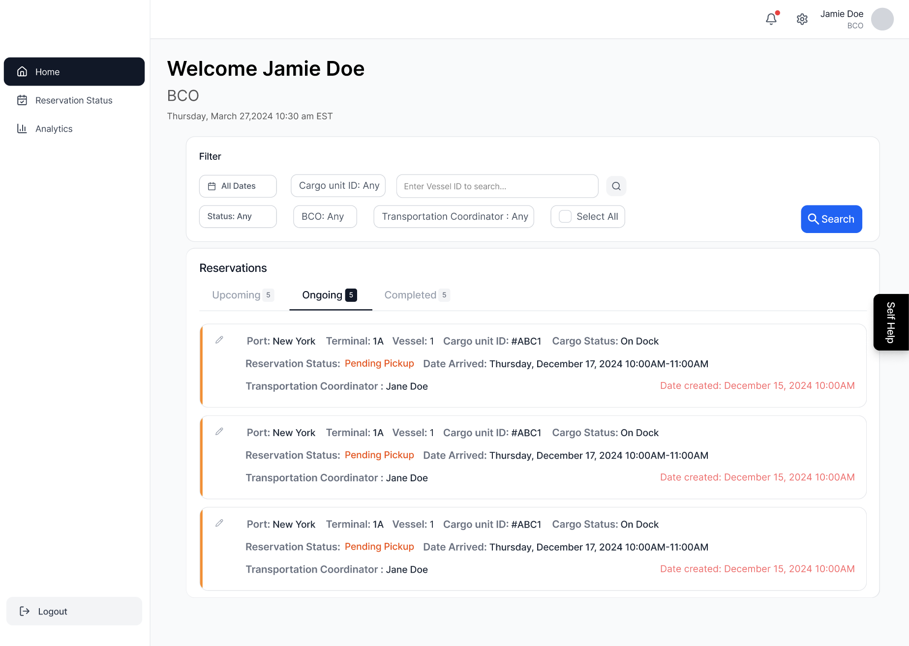

Carlos, Terminal Operator
Cognitive Load: I replaced his cluttered spreadsheets with Exception-Based Alerts. Instead of seeing thousands of containers, the UI only flags the issues that need his attention right now.
Port operators were managing cargo workflows across competing organizations through phone calls and manual spreadsheets, creating costly delays and cognitive overload.
I transformed this fragmented system into a unified digital platform. Each user role gets exactly the information they need to act.

Ports are competitive. Terminal operators and cargo owners are often afraid to share data for fear of losing their edge. This leads to endless phone calls, wasted truck trips, and massive delays.
My job was to design a system that felt safe enough for competitors to share data, but simple enough for stressed operators to actually use. I used Behavioral Science to solve a trust problem, not just a UI problem.
Before designing, I performed a Competitive Audit of 4 legacy port management systems to understand why they were failing to solve this problem.
I used Behavioral Science to solve a trust problem, not just a UI problem. Each user had a distinct mental model and a specific reason not to engage.
Cognitive Load: I replaced his cluttered spreadsheets with Exception-Based Alerts. Instead of seeing thousands of containers, the UI only flags the issues that need his attention right now.
Psychological Safety: To fix the fear of data leaks, I built Privacy-First Data Masking. He can share a status (Ready/Delayed) without revealing the private value of his cargo to competitors.
Reducing Uncertainty: I replaced her 20+ daily phone calls with a Real-Time Sync dashboard, giving her total control over truck scheduling without leaving her desk.
I moved away from the "tabular fatigue" common in legacy port systems by prioritizing how users scan for information under pressure.
I replaced 15-column tables with a Card-Based Architecture. The Cargo Unit ID anchors the top-left of each card, matching the natural reading path of the human eye.
This spatial chunking lets operators process one shipment at a time, eliminating the row-blur that causes errors in spreadsheet views.
I approached Section 508 Compliance not just as a legal requirement, but as a core safety feature for the port's unique physical environment.
Three distinct user roles. One shared component system.
Standardized card templates, status indicators, and alert patterns flex across Terminal Operator, Cargo Owner, and Dispatcher views without custom builds for each.
Legacy systems use tiny, cramped rows where every line looks identical. To find one container, you have to read 50 lines of the same text.

Legacy systems bury critical info in high-density tables, making it hard to spot emergencies.

My design uses a card-based layout to highlight the Status, making the screen scannable in high-stress environments.
I presented the design to 7 stakeholders across three states via remote task-based walkthroughs. Participants included Terminal Operators and Vendors.
I facilitated each session and gathered real-time feedback using System Usability Scale assessments and open-ended qualitative questions.
The system passed the validation criteria, proving that the Behavioral Design approach effectively lowered the barrier to data sharing.
The study transformed the project from a Proof of Concept into a Roadmap by identifying key friction points.
| Focus Area | Stakeholder Feedback | UX Strategy Response |
|---|---|---|
| Industry Jargon | Preferred "Appointment" over "Booking" for cargo pickup. | Standardized Mental Models: Aligned UI copy with literal port floor vocabulary. |
| Workflow Tracking | Users wanted to see their "spot" in the overall process. | Process Visualization: Redesigned the header to show a linear status indicator. |
| Operational Scaling | Must handle up to 300 separate truck operators. | Performance Design: Validated that the card layout remains scannable under high data loads. |
Phase 1 success secured immediate investment and an expanded scope.
PCIS evolved from a contested data-sharing concept into a validated, 508-compliant platform with multi-state buy-in.
Based on usability findings, I'm currently leading Phase 2 design within an agile cadence. I collaborate with engineering in refinement sessions to scope feasibility before committing to a sprint.
Phase 2 is focused on: